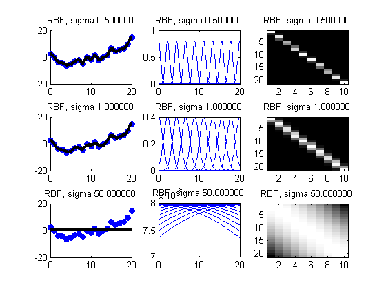

Demo of RBF Expansion for linear regression
[xtrain, ytrain, xtest, ytest] = polyDataMake('-sampling','thibaux');
lambda = 0.001;
sigmas = [0.5 1 50];
K = 10;
centers = linspace(min(xtrain), max(xtrain), K)';
figure; hold on
for i=1:length(sigmas)
sigma = sigmas(i);
Xtrain = rbfKernel(xtrain(:), centers, sigma);
Xtest = rbfKernel(xtest(:), centers, sigma);
model = linregFitL2(Xtrain, ytrain, lambda, 'QR', false);
ypred = linregPredict(model, Xtest);
subplot2(3,3,i,1)
scatter(xtrain,ytrain,'b','filled');
hold on
plot(xtest, ypred, 'k', 'linewidth', 3);
title(sprintf('RBF, sigma %f', sigma))
subplot2(3,3,i,2)
Xtest = rbfKernel(xtest(:), centers, sigma);
for j=1:K
plot(xtest, Xtest(:,j)); hold on
end
title(sprintf('RBF, sigma %f', sigma))
subplot2(3,3,i,3)
imagesc(Xtrain); colormap('gray')
title(sprintf('RBF, sigma %f', sigma))
end
printPmtkFigure('rbfDemo9')
